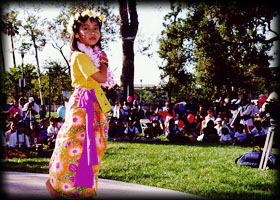
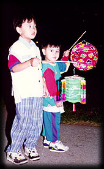
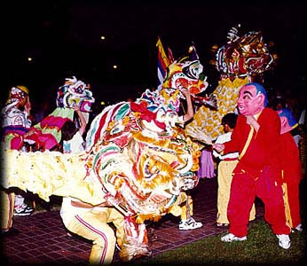

 |
Multicultural Performances:The audience will be able to enjoy other cultures' dances and music. The cultural groups include Mexicans, Chinese, Japanese, Cambodians, and Vietnamese. |
| Lantern Procession: This is the grand finale of the Mid-Autumn Festival . The traditional lantern procession symbolizes a scholar who serves as the children's role model to succeed in school. Thus, the main theme of this lantern procession is to encourage education. |  |
 |
When the night comes, children and enthusiastic grown-ups, accompanied by the "Lân" dance, parade joyously with candle-lit lanterns throughout the park. |